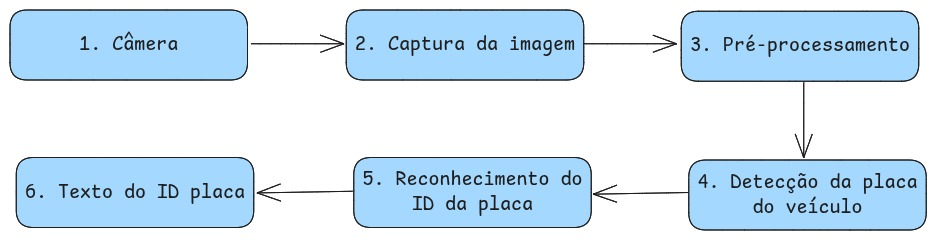

Seminário Final — Sistema de Leitura Automática de Placas de Veículos Grupo 8 - ICPG
1. Motivação e Contexto
O controle de acesso e registro de veículos é uma necessidade recorrente em ambientes como estacionamentos, condomínios, empresas e canteiros de obras. Tradicionalmente, esse processo é feito de forma manual, o que pode gerar erros, atrasos e até falhas de segurança. Por meio de entrevistas empáticas com profissionais de diferentes áreas, identificamos demandas reais por automação desse processo, como:
Redução de erros humanos no registro de placas.
Agilidade no controle de entrada e saída de veículos.
Facilidade de integração com sistemas de gestão e segurança.
A visão computacional surge como uma solução inovadora, capaz de transformar imagens capturadas por câmeras em informações úteis, automatizando tarefas repetitivas e aumentando a confiabilidade dos registros.
Exemplo real: Em um canteiro de obras, o porteiro precisa anotar manualmente as placas dos veículos, o que pode gerar filas e erros de digitação. Com o sistema proposto, a leitura é feita automaticamente, otimizando o fluxo e a segurança.
2. Objetivos do Projeto
O principal objetivo do projeto é desenvolver um sistema de leitura automática de placas de veículos, utilizando técnicas de visão computacional e inteligência artificial. Os objetivos específicos incluem:
Detectar e reconhecer placas de veículos em tempo real, a partir de imagens de webcam.
Aplicar conceitos fundamentais da disciplina, como filtragem, transformações geométricas, calibração de câmera e OCR.
Oferecer uma interface simples, acessível a usuários leigos, e resultados confiáveis.
Permitir fácil integração com outros sistemas, exportando os dados em formatos como CSV ou JSON.
Impacto esperado: A automação desse processo pode ser aplicada em diversos setores, promovendo eficiência, segurança e redução de custos operacionais.
3. Metodologia e Modelagem
O desenvolvimento do sistema seguiu uma abordagem iterativa, baseada em etapas bem definidas:
Levantamento de requisitos: Entrevistas empáticas com profissionais de diferentes áreas para identificar necessidades reais.
Modelagem funcional: Elaboração de diagramas e tabelas para representar o fluxo de dados e os blocos do sistema.
Implementação: Desenvolvimento do sistema em Python, utilizando OpenCV, pytesseract e easyocr.
Testes experimentais: Avaliação do sistema em laboratório e campo, com coleta de feedback dos usuários.
Fluxograma do Sistema

Tabela: Blocos Funcionais do Sistema
Bloco
Entrada
Processamento
Saída
Câmera
Veículo passando
Captura de vídeo/imagem
Frames de vídeo
Captura de Imagem
Frames de vídeo
Leitura dos frames
Imagem/frame individual
Pré-processamento
Imagem/frame
Redimensionamento, escala de cinza, redução de ruído, morfologia
Imagem pré-processada
Detecção de Placa (OpenCV)
Imagem pré-processada
Localização da placa no frame
Imagem da placa recortada (ROI)
Reconhecimento de Caracteres (OCR)
Imagem da placa
Reconhecimento dos caracteres (pytesseract/easyocr)
Texto da placa
Registro/Exibição
Texto da placa
Armazenamento/exibição ao usuário
Informação registrada/exibida
4. Funcionamento do Sistema e Demonstração
O sistema foi implementado em Python, com uma arquitetura modular e eficiente. A seguir, destacamos as principais etapas do pipeline, acompanhadas de exemplos reais do código-fonte:
Captura de vídeo e inicialização
cap = cv2.VideoCapture(0)
if not cap.isOpened():
print("❌ Não foi possível abrir a câmera")
exit(1)
O sistema também conta com funções para calibração de câmera, exportação dos resultados e interface de fácil operação, com atalhos de teclado para pausar, alternar debug e sair.
Exemplo de Pré-processamento de Imagem
1. Quadro Original2. Escala de Cinza3. Bordas (Canny)4. Regiões de Interesse
5. Resultados e Avaliação
O sistema foi avaliado em diferentes cenários, com placas simuladas, sob variadas condições de iluminação e ângulo. Simulações de 15 placas diferentes em distâncias variadas, rodando em modo --dual (tesseract e easyocr) em um MacBook Air M1. Os resultados demonstraram boa robustez e precisão, especialmente em placas padrão Mercosul. Abaixo, um exemplo de tabela de resultados:
Cenário
Taxa de Acerto
Tempo Médio (s)
Observações
Ambiente controlado (luz boa)
93%
2,3
Reconhecimento quase instantâneo
Luz natural (externo)
86%
3,2
Algumas falhas em placas sujas
Luz baixa
80%
5,4
Redução de precisão, mas ainda funcional
Placas inclinadas
40%
12,4
Maior dificuldade, dificilmente detecta, mas detecta em baixas inclinações
O feedback dos usuários foi positivo, destacando a facilidade de uso e a utilidade prática do sistema. Sugestões de melhoria incluem aprimorar o reconhecimento em condições extremas e adicionar integração com bancos de dados.
Respostas do questionário do Google Forms
6. Demonstração em Vídeo
Demonstração do sistema SPV em funcionamento durante o Teste de Campo.
7. Conclusões
O projeto proporcionou uma experiência completa de desenvolvimento em visão computacional, desde a identificação de um problema real até a entrega de uma solução funcional e testada. Dentre os aprendizados, os principais que o projeto nos proporcionou incluem:
Integração de técnicas de processamento de imagens, detecção de objetos e OCR.
Importância da calibração de câmera para resultados robustos.
Desafios de trabalhar com imagens reais, sujeitas a ruídos e variações ambientais.
Valor do feedback dos usuários para aprimorar a solução.
Atingimos o objetivo principal de desenvolver um sistema de visão computacional para a leitura de placas.
Explorações Futuras
O sistema desenvolvido oferece diversas oportunidades de expansão e aprimoramento, destacamos:
Integração com sistemas de monitoramento em tempo real, fornecendo uma API para acesso aos dados.
Melhoria na detecção de placas em condições adversas, usando modelos de machine learning.
Expansão para reconhecimento de características dos veículos.
8. Agradecimentos e Perguntas
Agradecemos à UFABC, ao professor da disciplina, aos colegas e aos profissionais entrevistados, que contribuíram com suas experiências e sugestões. O projeto foi uma oportunidade de aplicar teoria na prática e gerar impacto real.
Dúvidas, comentários ou sugestões? Estamos à disposição para discutir!

.png)